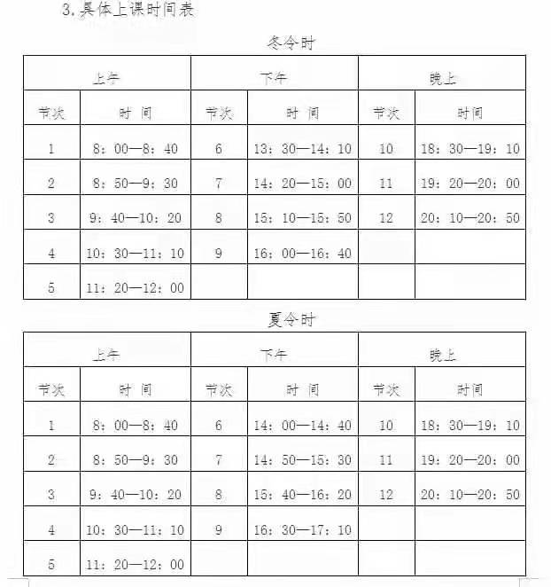

我曾饱览古老的书籍， The legends and the myths， 那些传说与神话， Achilles and his gold， 阿喀琉斯和他的战利品， Hercules and his gifts， 大力神与他的天赋神力， Spiderman's control， 蜘蛛侠的控制力， And Batman with his fists， 和蝙蝠侠的铁拳， And clearly I don't see myself upon that list，显而易见我未能名列其中，
But she said, where'd you wanna go? 她说，你想去何方？ How much you wanna risk? 你想承担多大的风险？ I'm not looking for somebody， 我并不渴求， With some superhuman gifts， 那些超人类的天赋， Some superhero， 那种超级英雄， Some fairytale bliss， 那些童话般的天赐之福， Just something I can turn to， 只是一些我能力所能及的事情， Somebody I can kiss， 吻到我爱的人就好， I want something just like this， 我想要的仅此而已，
想了解更多可以百度一下
I want something just like this， 我只想要这些， I've been reading books of old， 我曾饱览古老的书籍， The legends and the myths， 那些传说与神话， The testaments they told， 他们所讲述的圣约， The moon and its eclipse， 月亮的阴晴圆缺， And Superman unrolls， 还有超人展示， A suit before he lifts， 他飞天前的装束， But I'm not the kind of person that it fits， 但我不是这样的英雄， She said, where'd you wanna go? 她说，你想去何方？ How much you wanna risk? 你能承担多大的风险？ I'm not looking for somebody， 我并不渴求， With some superhuman gifts， 那些超人类的天赋， Some superhero， 那种超级英雄， Some fairytale bliss， 那些童话般的天赐之福， Just something I can turn to， 只是一些我能力所能及的事情， Somebody I can miss， 见到我爱的人， I want something just like this， 我想要的仅此而已， I want something just like this， 我想要的仅此而已，